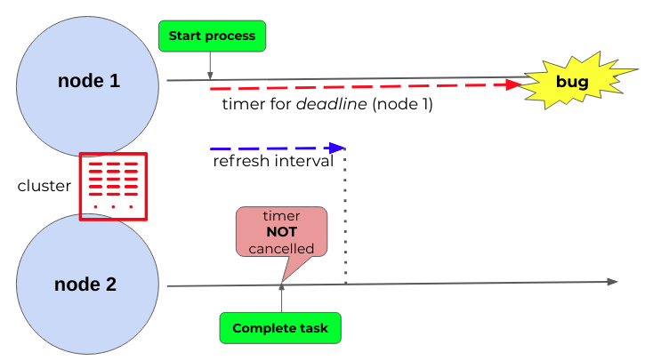
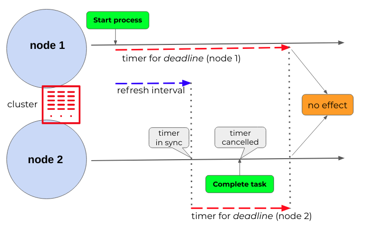
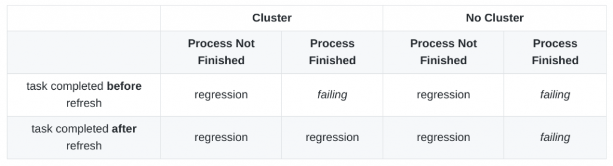

Complex KIE server tests automation part 1: EJB Timers on clusters
Motivation: how to ease complex KIE server tests
One of the widely accepted testing principles is the “pesticide paradox”: to detect new defects, new tests must be written; however, testing exhaustively (especially complex scenarios) and automating these complex KIE server tests is sometimes not feasible due to time and budget constraints.
With this article, we want to start a series about how to ease this test automation in complex KIE server setups in order to present some of the tooling and techniques that can help to identify possible bugs and verify their fixes.
We think they can be very useful for different purposes: from reducing repetitive manual testing to obtaining consistency, repeatability and more confidence in "regression testing" as they can be seamlessly integrated into CI/CD pipelines.
Off we go!
EJB timers on multiple nodes
In this case, let’s dive into a one of these complex KIE server tests: an issue at jBPM 7.52.0.Final tracked by JBPM-9690 with multiple KIE server nodes.
In a process involving human tasks with deadlines (“not completed” notification, for example), if one of these tasks is completed in a different node than the one that started the process (and therefore, the timer) when the timer is triggered after the process has already finished, an incorrect reschedule loop is happening because the node that should have cancelled the timer didn’t do it as it was not aware of that timer.
This first article focuses on how to exercise different scenarios after patching the image with the solution provided by PR jbpm#1908 to test that the expected result is achieved and the issue has been fixed.
It takes advantage of testcontainers library, creating an image on-the-fly, from the multistage Dockerfile. This image is tuned to meet all the necessary preconditions for testing the covered scenarios:
- build the kjar project
- patch the jBPM image with the fixed classes at the corresponding jar
- invoke a custom jboss-cli script to configure postgresql persistence and the clustered EJB timers support
You can check out all the code and configuration for this example here.
Root cause analysis
Root cause analysis showed us that when the task is completed in a different node (if this one doesn’t belong to the same cluster of the starting node or the refresh interval has not happened yet), this node is not aware of the timer and cannot cancel it.

Refresh-interval in the EJB timer service is the “interval between refreshing the current timer set against the underlying database”. This allows all the nodes in the cluster to be aware of the new timers started up. Therefore, all timers are synchronized for all nodes, no matter where they were started. A low value means timers get picked up more quickly; but, on the other hand, this increases the load in the database.

Covered scenarios
Let’s analyze which scenarios for confirmation and regression testing we want to cover in these complex KIE server tests. For all of them, the user starts the process in one node (node 1) but completes the target task in another one (node 2).
However, there are different combinations based on:
- there is an EJB timer cluster or not
- task is completed before or after the refresh-interval first occurrence
- process has finished (session not found) or still alive (waiting on a second human task) when notification comes up
The following table summarizes which scenarios were failing or not (regression) before applying the patch.

Using a system property (org.kie.samples.ejbtimer.nocluster) for creating or not clusters in the same database partition allows us to test all these scenarios.
Clustered environments ensure timers from one node fail-over to another node, when it’s not available.

Reproducer processes
For the finished scenarios, the reproducer process contains just one human task; therefore, the process finishes after completing the human task.
Script tasks are fully automated, being executed without interruption, like in straight-through processing.


- refresh-interval is 10 seconds
- not-completed notification repeated each 15 seconds:
R/PT15s - process and task started in node 1; after that, task completed at node 2
For the not-finished scenarios, the reproducer process contains a second human task that keeps on waiting, so session is still alive when the notification comes up. Therefore, these scenarios are just for regression testing, as the issue came from a SessionNotFound exception. Nevertheless, they are part of the testing to check how the system behaves in an error-prone scenario.

Test setup for complex KIE server tests

Test class spins up different containers:
- postgresql module with initialization script under
/docker-entrypoint-initdb.dcontainingpostgresql-jbpm-schema.sqlas explained here
- two generic containers with the
jboss/kie-server-showcase:7.52.0.Finalimage modified by Dockerfile with the postgresql datasource configuration and the timer-service configuration for EJB timers persistence. Patched jar with the fix will also override the targeted jar. All this tuning will be done on-the-fly creating a temporary image just for testing execution.
 Multistage Dockerfile is also in charge of building the business application (kjar) for exercising test scenarios after pulling the maven image.
Multistage Dockerfile is also in charge of building the business application (kjar) for exercising test scenarios after pulling the maven image.A shared network allows communication among containers using the mappedPort: KIE servers and postgresql will listen on a random free port, avoiding port clashes and skipping port offsets redefinition.

partition_name for each one.
[KIE-LOG-node2] STDOUT: 20:32:08,728 INFO [io.undertow.accesslog] (default task-1) 172.21.0.1 [15/Apr/2021:20:32:08 +0000] "PUT /kie-server/services/rest/server/containers/org.kie.server.testing:cluster-ejb-sample:1.0.0/tasks/1/states/completed HTTP/1.1" 201
[KIE-LOG-node1] STDOUT: 20:32:22,410 DEBUG [org.jbpm.services.ejb.timer.EJBTimerScheduler] (EJB default - 1) About to execute timer for job EjbTimerJob [timerJobInstance=GlobalJpaTimerJobInstance [timerServiceId=org.kie.server.testing:cluster-ejb-sample:1.0.0-timerServiceId, getJobHandle()=EjbGlobalJobHandle [uuid=1_1_END]]]This withPrefix method is the responsible of configuring the logger that way:
withLogConsumer(new Slf4jLogConsumer(logger).withPrefix("KIE-LOG-"+nodeName));The waiting strategy to have KIE server containers ready to start the testing will be based on looking for a pattern message in the logs just one time; when found, it indicates that all required services have successfully started.
waitingFor(Wait.forLogMessage(".*WildFly.*started in.*", 1) .withStartupTimeout(Duration.ofMinutes(5L)));In addition, for querying to EJB Timer table, we will use postgresql JDBC with the HikariDataSource configured like this:
HikariConfig hikariConfig = new HikariConfig(); hikariConfig.setJdbcUrl(postgreSQLContainer.getJdbcUrl()); hikariConfig.setUsername(postgreSQLContainer.getUsername()); hikariConfig.setPassword(postgreSQLContainer.getPassword()); hikariConfig.setDriverClassName(postgreSQLContainer.getDriverClassName());Let’s test it
Firstly, for building the hands-on example locally, you need to have the following tools installed:
- git client
- java 1.8
- maven 3.6.3
- docker (because of testcontainers makes use of it).
Secondly, once you cloned the repository locally all you need to do is execute the following Maven build (for clustered scenarios):
mvn clean installand the following for non-clustered scenarios:
mvn clean install -Dorg.kie.samples.ejbtimer.nocluster=trueAfter that, for the previously failing scenarios, we can see that the target timer was detected and cancelled:
[KIE-LOG-node1] STDOUT: 17:26:49,999 DEBUG [org.jbpm.services.ejb.timer.EJBTimerScheduler] (EJB default - 1) Job handle EjbGlobalJobHandle [uuid=1_1_END] does match timer and is going to be canceled
[KIE-LOG-node1] STDOUT: 17:26:50,001 DEBUG [org.jboss.as.ejb3.timer] (EJB default - 1) Removed timer [id=61db8d51-b813-4fac-8ddf-7fcae466caac timedObjectId=kie-server.kie-server.EJBTimerScheduler auto-timer?:false persistent?:true timerService=org.jboss.as.ejb3.timerservice.TimerServiceImpl@4aee016d initialExpiration=Mon Apr 19 17:26:49 UTC 2021 intervalDuration(in milli sec)=0 nextExpiration=null timerState=CANCELLED info=EjbTimerJob [timerJobInstance=GlobalJpaTimerJobInstance [timerServiceId=org.kie.server.testing:cluster-ejb-sample:1.0.0-timerServiceId, getJobHandle()=EjbGlobalJobHandle [uuid=1_1_END]]]] from internal cacheFinally, you can find code and configuration for this example here.
Conclusion: complex KIE server tests are feasible
For testing complex scenarios, like multiple KIE server nodes with EJB Timer clustered (or not) persisted by postgresql database, we may create on-the-fly images that include patched jars, custom jboss-cli scripts and business applications. Therefore, we are covering not only the target scenarios but also regressions, leveraging the full potential of testing automation.